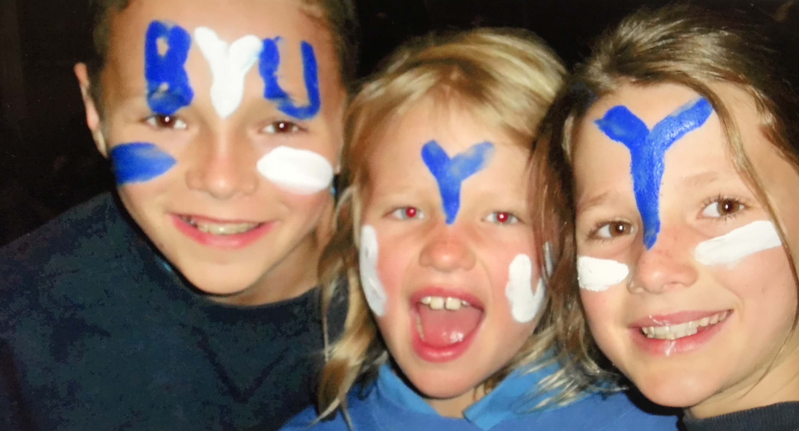

My Family

I have am the third of 7 kids. I have one sister and 5 brothers. We all grew up in San Diego, California. siblings and love it there. We are all two years apart, which allows us to be good friends and peers in addition to siblings. We are all very involved in sports and music and have a deep appreciation and love for it. My family is the best.
My Beliefs

I served a mission for The Church of Jesus Christ of Latter-Day Saints in Layton, Utah. I was origionally assigned to the Costa Rica, San Jose West mission but served the entirety of my mission in Utah due to the Covid-19 pandemic. I loved my mission and the opportunity to represent Jesus Christ for 18 months.
My School
I currently attend Brigham Young University. My parents met here and I have been a cougar fan since I was a young girl. I am studying business and enjoying fulfilling my childhood dream of being a cougar.
My Resume
Characteristics/Skills
- I am a super hard worker who is productive working alone but can also work well with others
- I am full of integrity and do not need someone micromanaging in order to work
- I am very efficient with time and produces high quality results
Education
- I attended Poway High School in Poway, CA. I began studying here in August of 2015 and completed High School in June of 2019
- I attended Palomar Community College in Escondido, CA. I studied here for one year of college (August 20, 2017- May 19, 2018). I currently attend Brigham Young University in Provo, UT. I completed my Freshman Year and Sophomore Year and I am beginning my Junior year. I studied from in July 2019- December 2019, and August 2021- current.
Work Experience
- I worked at Disability Help Center Law Firm in San Diego, CA from July 9th- August 15th 2018. Here I completed back work for the attorneys like scheduling pre hearings, calling to follow up on rep forms or medical lists, creating files and other similar tasks.
- I also worked at Better Together Home Care in Springville, UT in 2021. Here I worked as a home health aid for the elderly.
- I am currently a sushi chef at Five Sushi Brothers in Provo Utah. I began working here in January of 2022 and still employed there.
Contact Info
Phone number
- 858-668-8241
- jorgensensierra@gmail.com